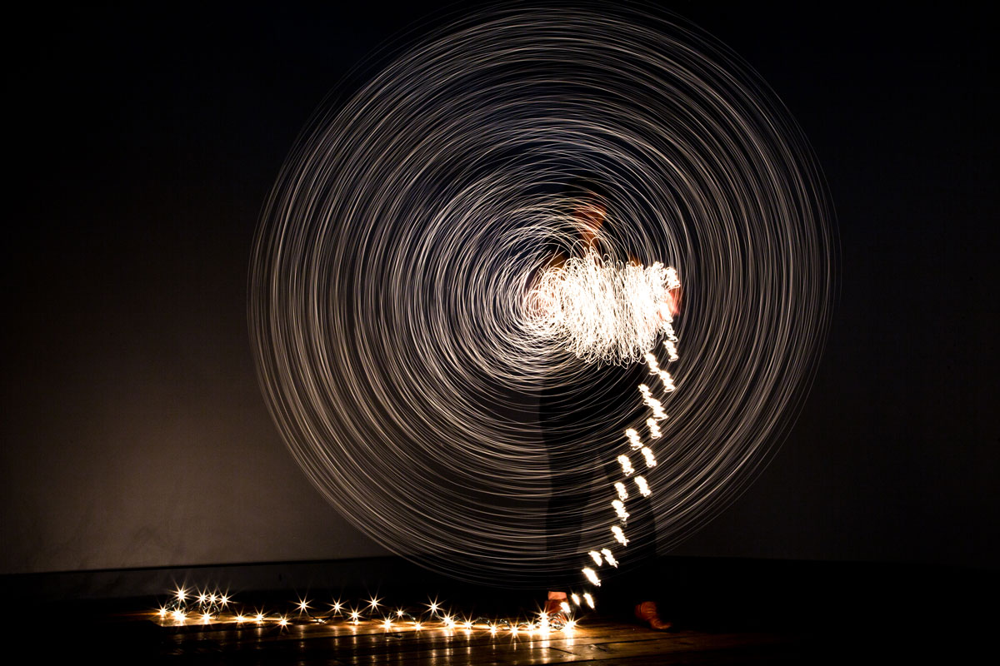

What is Shutter Speed in photography?
Shutter speed is how long an image is exposed to light — it can be milliseconds, or even minutes.
As one of three elements that affect how light or dark an image is (called exposure), understanding
shutter speed is essential to taking full creative control of the camera. If the shutter is left
open for a long time, the lens will let in a lot of light, and unless you are shooting a very dark scene,
the image will be too bright, or overexposed. If the shutter speed is too quick, on the other hand,
the photograph will be too dark. So what’s the right shutter speed? That depends on how much light
is in the scene. Outdoors on a sunny day, you’ll need a quick shutter speed, like 1/500. Indoors,
you’ll need to slow it down a bit — perhaps 1/100.

Using shutter speed for creative effects
Shutter speed can also be used to keep the subject sharp while blurring the background.
If you follow the movement of the subject while the shutter is open, the subject will be fairly sharp
while the background will blur. Panning is a tricky technique to master and requires a bit of practice,
but it can create some neat effects. The shutter speed for the panning technique varies a bit, but it’s
often much slower, around 1/30 or 1/60. Still scenes (or those that seem still) can still use shutter speed
for creative effects. Long exposure photography intentionally blurs some motion while keeping the rest of
the scene still. Waterfalls with smooth white water, for example, are shot with a tripod and a long
shutter speed. Long exposure is also a popular technique for shooting night landscapes — even if there
is no motion (the lack of light makes it tough to achieve the right exposure without a long shutter speed).
A tripod is required for long exposures, and if you plan on using the technique during the day, you’ll need
a neutral density filter to prevent overexposure.
How do you choose a shutter speed?
Ask yourself, “What type of photo do I want to take?” Determining shutter speed is something that
requires you to consider the end goal of your photo. “If you take a waterfall picture at a regular
shutter speed, the water freezes and you get all that texture,” Carlson says. “But you’ve also seen
pictures of waterfalls where the water is smooth and silky. It’s a cool effect and it’s super easy to do.
All you do is make sure that the camera doesn’t move and you shoot with a long shutter speed.
All those little details of the water running down will blend together and give you that look.”
Shutter speed gives the photographer the ability to use motion — or to freeze motion — to tell a tale
or capture a vibe. Whether you choose to take that split-second snapshot with a short shutter speed or
to portray the motion of subjects in a slow shutter speed photo, you’re opening up narrative possibilities.
Is it about capturing the moment as is or trying to portray how we perceive the moment? Or even to capture
the energy of the moment instead of simply the visual details? Mastering shutter speed puts that power
into your hands. And while technical knowledge is helpful in seeking this mastery, it’s practice that
inevitably will build this skill for any photographer.
“You could have academic knowledge of how photography works,” Davidson relays.
“But you also need to have the practical knowledge of trying it and practicing it all the time to
put the two together.”